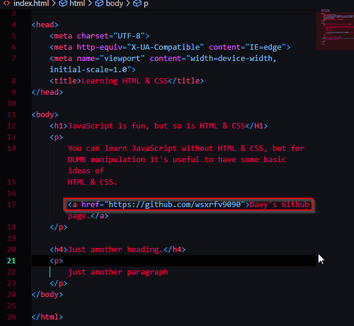

<a> anchor element that can put link in the paragraph, in <body> , it's a inline element, it displays just as the rest of the text(fonts and structure-wise)
attributes is placed behind the name of the elements like this:

<h2>is called a block element, it creates a new line with different fonts
<img>put image
<img src="hyperlinks"/>is how we use it:

two attributes that we can use to all elements: classes and ids:
we can use them to identify elements, we use them to name some elements that we can select them in css.

the differences between class and id, is that id can only be used once in every web page while class can be used over and over again.
creating an HTML form:
to use more attributes.
idea of creating boxes:
putting all of the contents of a form into a box.
many ways:
1. most generic box is div:
asking for the user's name:

2. Because it contains a input and a button, it's makes more sense like this if we use form box elements:

div is generic, but for google or other browser to understand and search properly, it's going to be the best if you use form in this case.